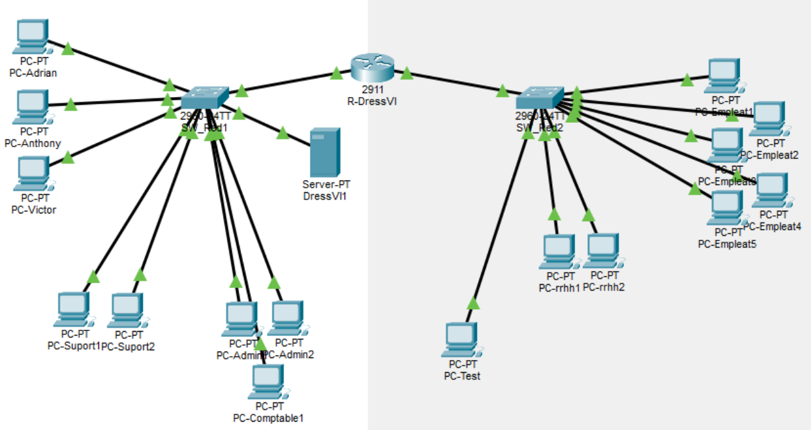
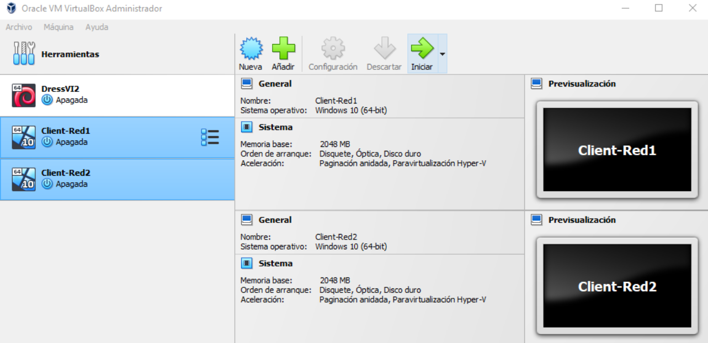
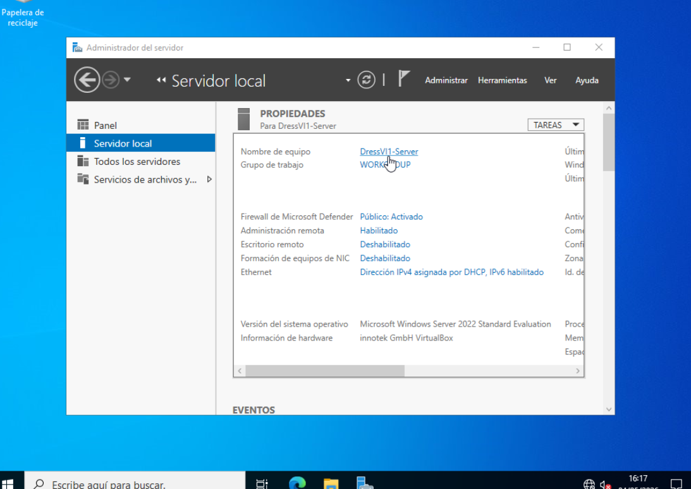
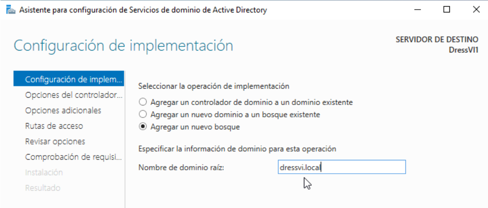
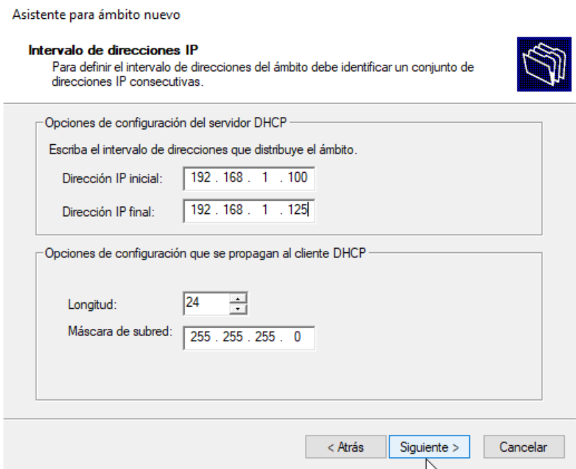
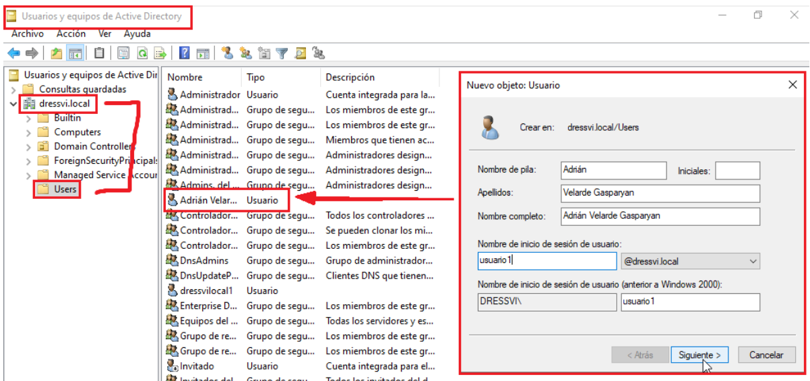

Cisco Packet Tracer
He creat i configurat xarxes amb routers i switches virtuals utilitzant Cisco Packet Tracer. He treballat amb IPs, connexions i configuracions bàsiques de xarxa.

Màquines virtuals
He instal·lat i configurat màquines virtuals amb diferents sistemes per realitzar pràctiques i proves.

Windows Server, DNS, DHCP i Active Directory
He configurat un DHCP amb màquines virtuals i he fet un domini. He creat també usuaris i grups en Windows Server AD. També he configurat permisos i administració bàsica de sistemes.



